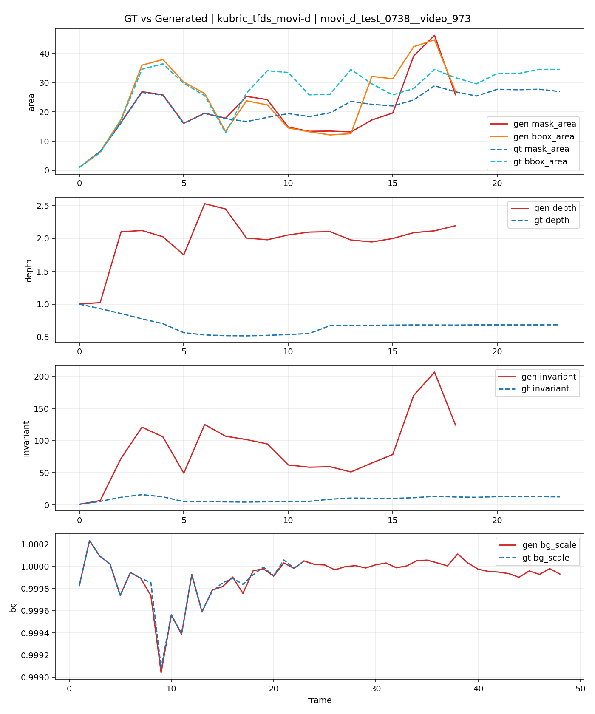
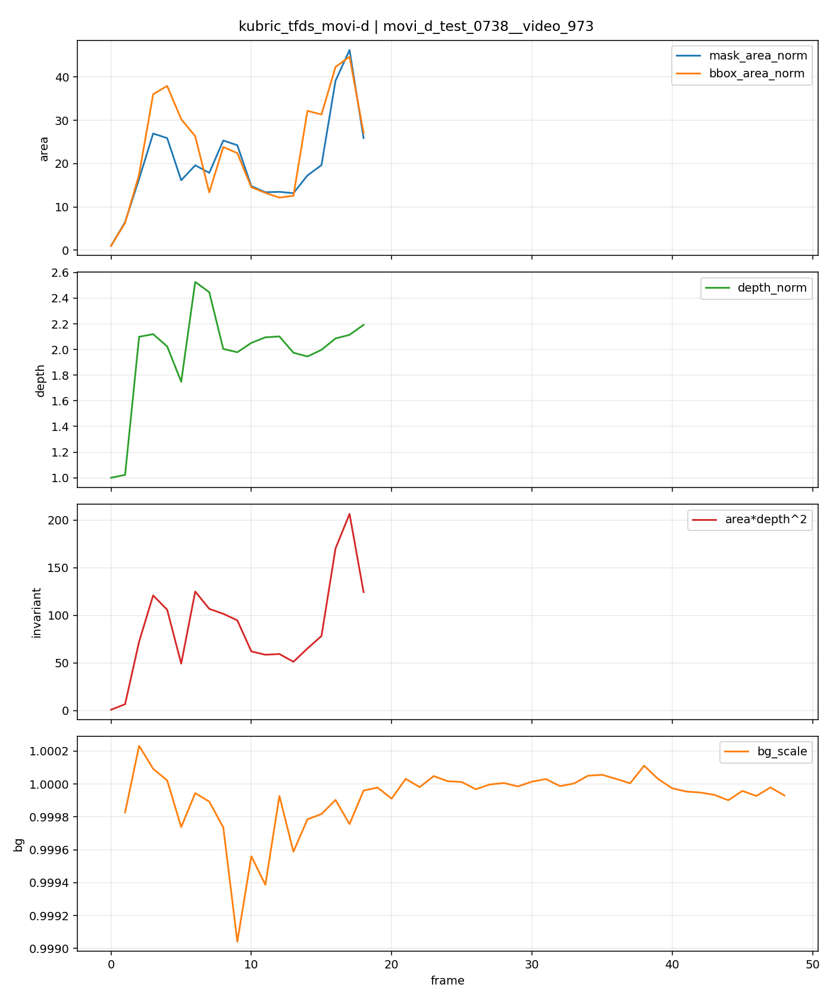
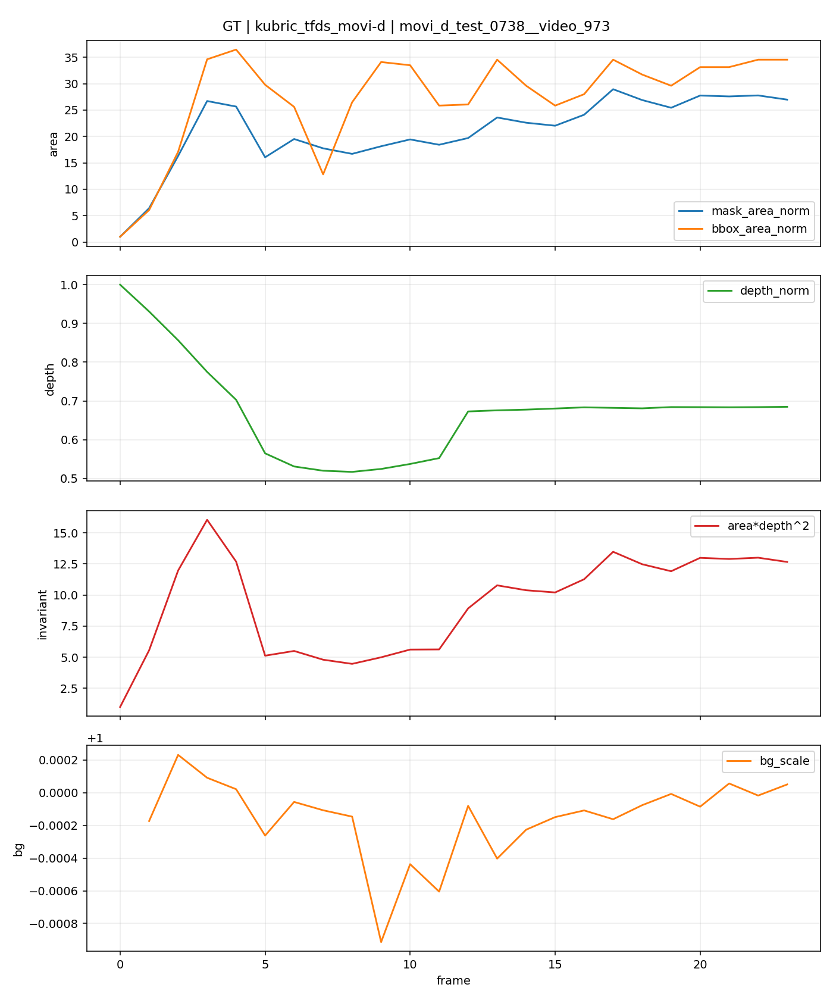
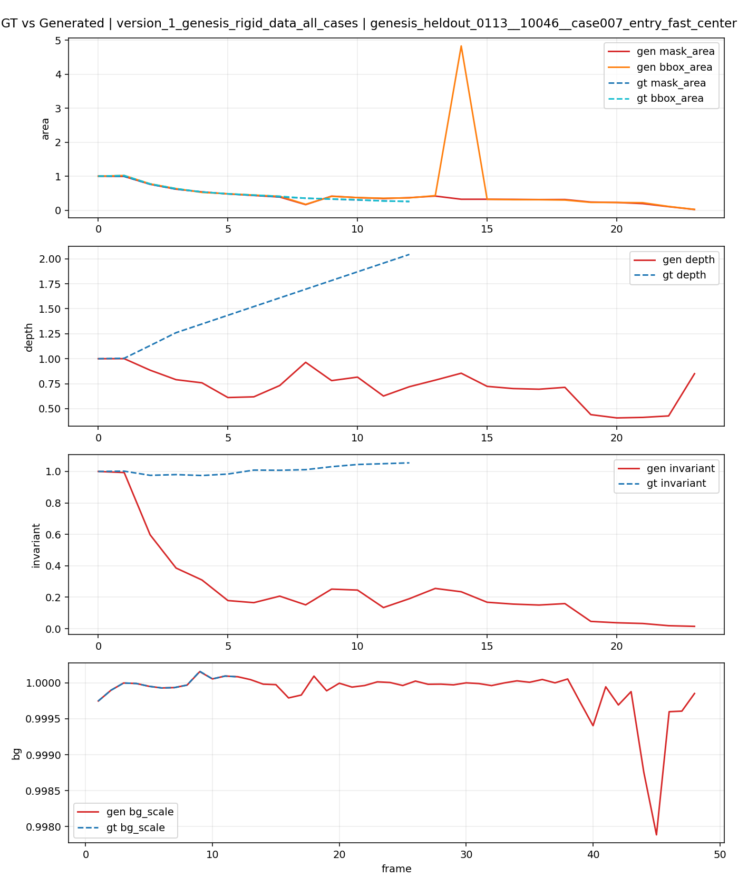
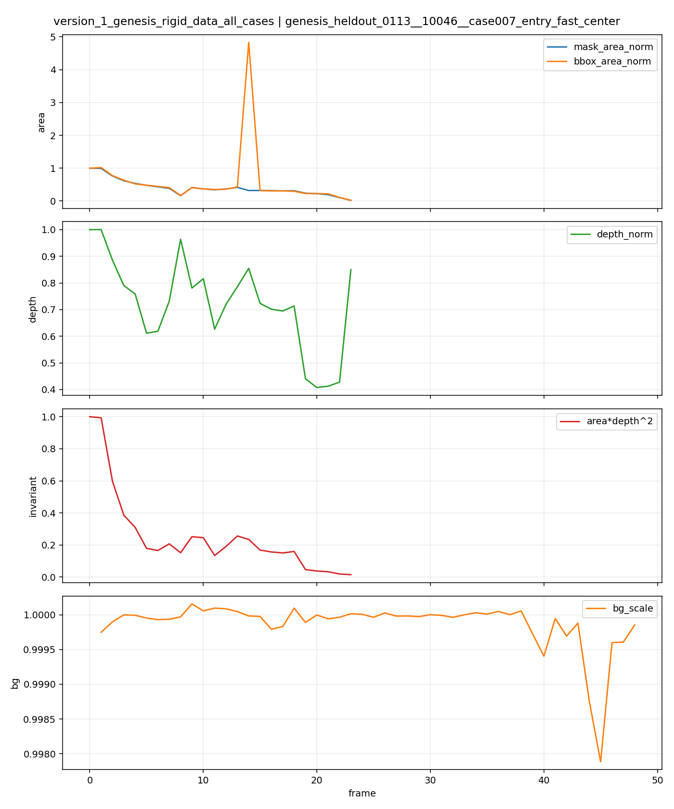
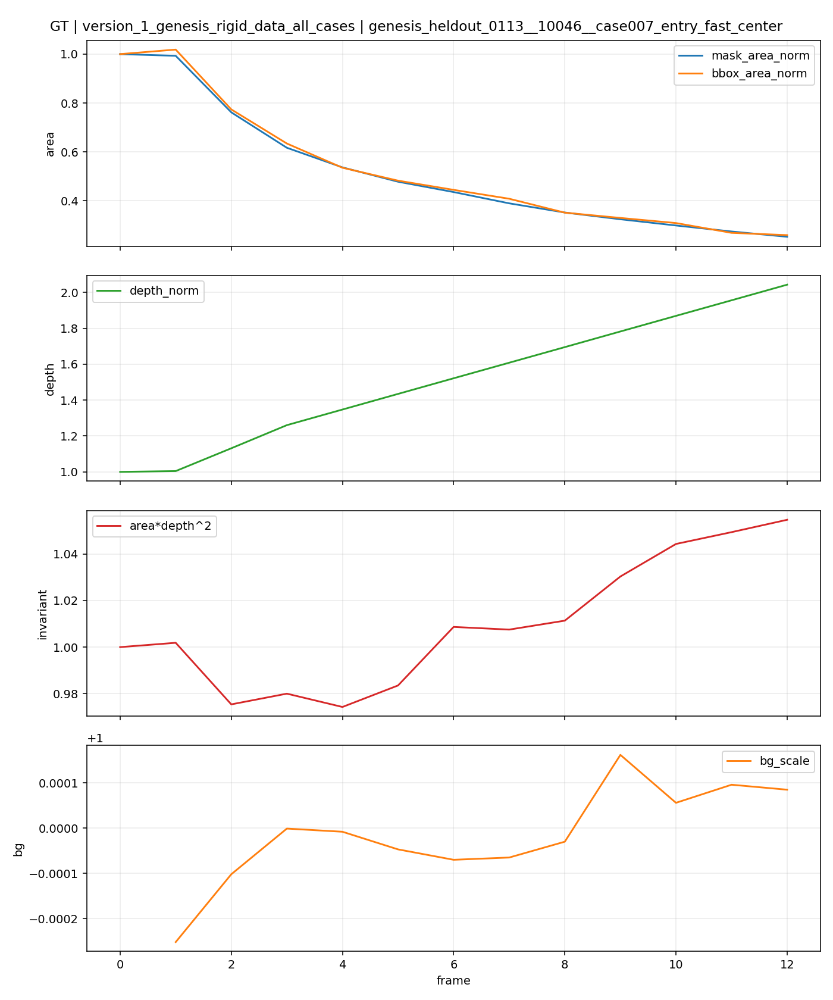

Geometry Diagnostics
Debug portal for the current local run. Generated curves currently use a target-window foreground proxy, while GT reference curves and GT overlays use synthetic segmentation/depth where available.
kubric_tfds_movi-d
movi_d_test_0738__video_973
tracking_or_visibility_failure
Analysis
- Target `seg_11` was selected with `highest_motion_gt_instance_in_context` under mode `movi_d_gt`.
- Generated-video analysis prefers context-initialized object tracking. When that fails or is unavailable, it falls back to a target-window foreground proxy.
- GT reference curves use synthetic segmentation/depth and provide a stronger baseline for whether the generated size change looks physically plausible.
- The target proxy is not stable enough over time, so this case is better treated as a tracking/visibility failure than a clean geometry diagnosis.
Context Video
Generated Video
Full GT Video
Context Overlay
Generated Diagnostic Overlay
GT Diagnostic Overlay
GT vs Generated Curves

Generated Curves

GT Reference Curves

Diagnostics JSON
{
"sidecar_path": "/data/gaoya/AAA_test_video/Benchmark/stage0_V2V/output/VACE_1_3B_V2V/context_08f/kubric_tfds_movi-d__movi_d_test_0738__video_973.json",
"dataset": "kubric_tfds_movi-d",
"sample_id": "movi_d_test_0738__video_973",
"mode": "movi_d_gt",
"target": {
"object_label": "seg_11",
"seg_id": 11,
"selection_mode": "highest_motion_gt_instance_in_context",
"confidence": 1.0
},
"generated_tracking": {
"source": "sam2_context_multi_frame_mask_init",
"num_tracked_frames": 49
},
"summary": {
"max_future_mask_area_ratio": 46.217822,
"max_future_area_depth2_ratio": 206.607725,
"target_visible_ratio": 0.387755,
"mean_bg_scale": 0.999916,
"root_cause": "tracking_or_visibility_failure"
},
"analysis": [
"Target `seg_11` was selected with `highest_motion_gt_instance_in_context` under mode `movi_d_gt`.",
"Generated-video analysis prefers context-initialized object tracking. When that fails or is unavailable, it falls back to a target-window foreground proxy.",
"GT reference curves use synthetic segmentation/depth and provide a stronger baseline for whether the generated size change looks physically plausible.",
"The target proxy is not stable enough over time, so this case is better treated as a tracking/visibility failure than a clean geometry diagnosis."
],
"num_frames": 49,
"context_frames": 8,
"gt_reference": {
"available": true,
"num_frames_compared": 24,
"target_visible_ratio": 1.0,
"mean_bg_scale": 0.9998452274087299
},
"artifacts": {
"context_video": "/data/gaoya/dataset/kubric_tfds_movi-d/mytest/movi_d_test_0738__video_973/context_video.mp4",
"generated_video": "/data/gaoya/AAA_test_video/Benchmark/stage0_V2V/output/VACE_1_3B_V2V/context_08f/kubric_tfds_movi-d__movi_d_test_0738__video_973.mp4",
"full_gt_video": "/data/gaoya/dataset/kubric_tfds_movi-d/mytest/movi_d_test_0738__video_973/full_video.mp4",
"curves_csv": "/home/gaoya/Code_Video/Code_data/Code_train/train_0419/geometry_diagnostics/_debug_run_tracking/vace_v2v_ctx08f__kubric_tfds_movi-d__movi_d_test_0738__video_973/curves.csv",
"curves_png": "/home/gaoya/Code_Video/Code_data/Code_train/train_0419/geometry_diagnostics/_debug_run_tracking/vace_v2v_ctx08f__kubric_tfds_movi-d__movi_d_test_0738__video_973/curves.png",
"gt_curves_csv": "/home/gaoya/Code_Video/Code_data/Code_train/train_0419/geometry_diagnostics/_debug_run_tracking/vace_v2v_ctx08f__kubric_tfds_movi-d__movi_d_test_0738__video_973/gt_curves.csv",
"gt_curves_png": "/home/gaoya/Code_Video/Code_data/Code_train/train_0419/geometry_diagnostics/_debug_run_tracking/vace_v2v_ctx08f__kubric_tfds_movi-d__movi_d_test_0738__video_973/gt_curves.png",
"comparison_curves_png": "/home/gaoya/Code_Video/Code_data/Code_train/train_0419/geometry_diagnostics/_debug_run_tracking/vace_v2v_ctx08f__kubric_tfds_movi-d__movi_d_test_0738__video_973/comparison_curves.png",
"context_diagnostic_video": "/home/gaoya/Code_Video/Code_data/Code_train/train_0419/geometry_diagnostics/_debug_run_tracking/vace_v2v_ctx08f__kubric_tfds_movi-d__movi_d_test_0738__video_973/context_diagnostic.mp4",
"generated_diagnostic_video": "/home/gaoya/Code_Video/Code_data/Code_train/train_0419/geometry_diagnostics/_debug_run_tracking/vace_v2v_ctx08f__kubric_tfds_movi-d__movi_d_test_0738__video_973/generated_diagnostic.mp4",
"gt_diagnostic_video": "/home/gaoya/Code_Video/Code_data/Code_train/train_0419/geometry_diagnostics/_debug_run_tracking/vace_v2v_ctx08f__kubric_tfds_movi-d__movi_d_test_0738__video_973/gt_diagnostic.mp4"
}
}
version_1_genesis_rigid_data_all_cases
genesis_heldout_0113__10046__case007_entry_fast_center
tracking_or_visibility_failure
Analysis
- Target `seg_2_initiator` was selected with `highest_motion_gt_object_in_context` under mode `genesis_gt`.
- Generated-video analysis prefers context-initialized object tracking. When that fails or is unavailable, it falls back to a target-window foreground proxy.
- GT reference curves use synthetic segmentation/depth and provide a stronger baseline for whether the generated size change looks physically plausible.
- The target proxy is not stable enough over time, so this case is better treated as a tracking/visibility failure than a clean geometry diagnosis.
Context Video
Generated Video
Full GT Video
Context Overlay
Generated Diagnostic Overlay
GT Diagnostic Overlay
GT vs Generated Curves

Generated Curves

GT Reference Curves

Diagnostics JSON
{
"sidecar_path": "/data/gaoya/AAA_test_video/Benchmark/stage0_V2V/output/VACE_1_3B_V2V/context_08f/version_1_genesis_rigid_data_all_cases__genesis_heldout_0113__10046__case007_entry_fast_center.json",
"dataset": "version_1_genesis_rigid_data_all_cases",
"sample_id": "genesis_heldout_0113__10046__case007_entry_fast_center",
"mode": "genesis_gt",
"target": {
"object_label": "seg_2_initiator",
"seg_id": 2,
"selection_mode": "highest_motion_gt_object_in_context",
"confidence": 1.0
},
"generated_tracking": {
"source": "sam2_context_multi_frame_mask_init",
"num_tracked_frames": 49
},
"summary": {
"max_future_mask_area_ratio": 0.414613,
"max_future_area_depth2_ratio": 0.255938,
"target_visible_ratio": 0.489796,
"mean_bg_scale": 0.999869,
"root_cause": "tracking_or_visibility_failure"
},
"analysis": [
"Target `seg_2_initiator` was selected with `highest_motion_gt_object_in_context` under mode `genesis_gt`.",
"Generated-video analysis prefers context-initialized object tracking. When that fails or is unavailable, it falls back to a target-window foreground proxy.",
"GT reference curves use synthetic segmentation/depth and provide a stronger baseline for whether the generated size change looks physically plausible.",
"The target proxy is not stable enough over time, so this case is better treated as a tracking/visibility failure than a clean geometry diagnosis."
],
"num_frames": 49,
"context_frames": 8,
"gt_reference": {
"available": true,
"num_frames_compared": 13,
"target_visible_ratio": 1.0,
"mean_bg_scale": 0.9999853677362333
},
"artifacts": {
"context_video": "/data/gaoya/AAA_test_video/Dataset_physV/0417data/version_1_genesis_rigid_data_all_cases/mytest/genesis_heldout_0113__10046__case007_entry_fast_center/context_video.mp4",
"generated_video": "/data/gaoya/AAA_test_video/Benchmark/stage0_V2V/output/VACE_1_3B_V2V/context_08f/version_1_genesis_rigid_data_all_cases__genesis_heldout_0113__10046__case007_entry_fast_center.mp4",
"full_gt_video": "/data/gaoya/AAA_test_video/Dataset_physV/0417data/version_1_genesis_rigid_data_all_cases/mytest/genesis_heldout_0113__10046__case007_entry_fast_center/full_video.mp4",
"curves_csv": "/home/gaoya/Code_Video/Code_data/Code_train/train_0419/geometry_diagnostics/_debug_run_tracking/vace_v2v_ctx08f__version_1_genesis_rigid_data_all_cases__genesis_heldout_0113__10046__case007_entry_fast_center/curves.csv",
"curves_png": "/home/gaoya/Code_Video/Code_data/Code_train/train_0419/geometry_diagnostics/_debug_run_tracking/vace_v2v_ctx08f__version_1_genesis_rigid_data_all_cases__genesis_heldout_0113__10046__case007_entry_fast_center/curves.png",
"gt_curves_csv": "/home/gaoya/Code_Video/Code_data/Code_train/train_0419/geometry_diagnostics/_debug_run_tracking/vace_v2v_ctx08f__version_1_genesis_rigid_data_all_cases__genesis_heldout_0113__10046__case007_entry_fast_center/gt_curves.csv",
"gt_curves_png": "/home/gaoya/Code_Video/Code_data/Code_train/train_0419/geometry_diagnostics/_debug_run_tracking/vace_v2v_ctx08f__version_1_genesis_rigid_data_all_cases__genesis_heldout_0113__10046__case007_entry_fast_center/gt_curves.png",
"comparison_curves_png": "/home/gaoya/Code_Video/Code_data/Code_train/train_0419/geometry_diagnostics/_debug_run_tracking/vace_v2v_ctx08f__version_1_genesis_rigid_data_all_cases__genesis_heldout_0113__10046__case007_entry_fast_center/comparison_curves.png",
"context_diagnostic_video": "/home/gaoya/Code_Video/Code_data/Code_train/train_0419/geometry_diagnostics/_debug_run_tracking/vace_v2v_ctx08f__version_1_genesis_rigid_data_all_cases__genesis_heldout_0113__10046__case007_entry_fast_center/context_diagnostic.mp4",
"generated_diagnostic_video": "/home/gaoya/Code_Video/Code_data/Code_train/train_0419/geometry_diagnostics/_debug_run_tracking/vace_v2v_ctx08f__version_1_genesis_rigid_data_all_cases__genesis_heldout_0113__10046__case007_entry_fast_center/generated_diagnostic.mp4",
"gt_diagnostic_video": "/home/gaoya/Code_Video/Code_data/Code_train/train_0419/geometry_diagnostics/_debug_run_tracking/vace_v2v_ctx08f__version_1_genesis_rigid_data_all_cases__genesis_heldout_0113__10046__case007_entry_fast_center/gt_diagnostic.mp4"
}
}